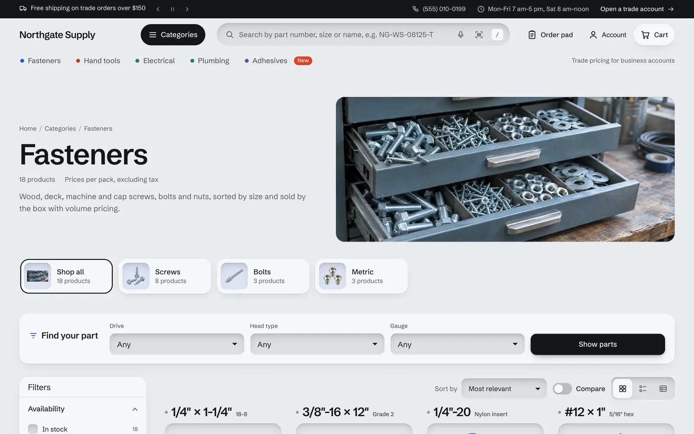

Store setup
Filters and search
Collection and search pages show the filters you turn on in Shopify's Search & Discovery app. Caliper chooses the clearest control for each filter on its own.


#Turn on filters
- Install Search & Discovery (free, by Shopify) if it is not in your admin.
- Open AppsSearch & DiscoveryFilters and select Add filter.
- Add the filters your buyers use most: Availability, Price, Product type, Vendor, variant options and your
calipermetafields. - Drag them into the order you want. The first four open by default.
#How each filter looks
| Filter | Shown as |
|---|---|
| Drive and head type | Tiles with a technical drawing (Phillips, Pozidriv, Torx, square, hex, slotted; flat, bugle, pan, round, truss, hex, socket). Matched in English, French, German, Italian, Spanish and Portuguese. |
| Filters with images set in Search & Discovery | Image tiles |
| Short values such as sizes | A compact grid of chips |
| Price | A slider with from and to boxes |
| Everything else | A checklist; long lists get a search box and "Show more" |
#Filter layout
Choose where filters sit in CustomizeCollectionProduct gridFilter layout:
- Sidebar: beside the grid, always visible on desktop.
- Top row: drop-downs above the grid, so products use the full width.
- Drawer: a button that opens the filters from the side.
On phones, filters always open as a tray from the bottom, with a row of filter names to jump between them and a "Show N results" button.
#Spec finder
The spec finder turns two to four filters into drop-downs above the products, like a parts counter. Turn on Show spec finder in the Product grid section and name the filters in Filters to use, for example Drive, Head type, Length.
#Search by part number
Search suggestions match variant SKUs and barcodes as well as names. An exact part number rises to the top with an Exact part badge and can be added to the cart from the results.
- In Theme settingsSearch, set Example part number to one of your SKUs. It appears in the search placeholder, so buyers know they can search that way.
- Add Popular searches: they show when the field is empty, with the buyer's recent searches.
- Turn on Show a category menu in the search field to let buyers narrow suggestions to one top-level category.
- Voice search and Barcode scanning add a microphone and, on phones, a camera button where the browser supports them.
#Sorting
Shopify's sort options (best selling, price, newest and more) are always there. Add part number and size sorting in the Product grid section adds "Part number, A–Z" and "Size, small to large", which sort the products of the current page by the first measurement in the size (3/8, 2-1/2, M6, #8).